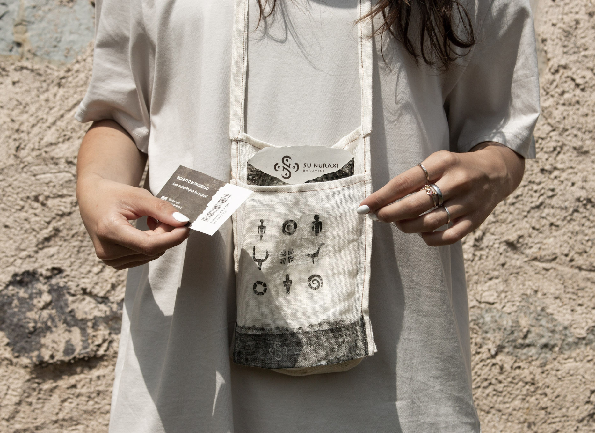
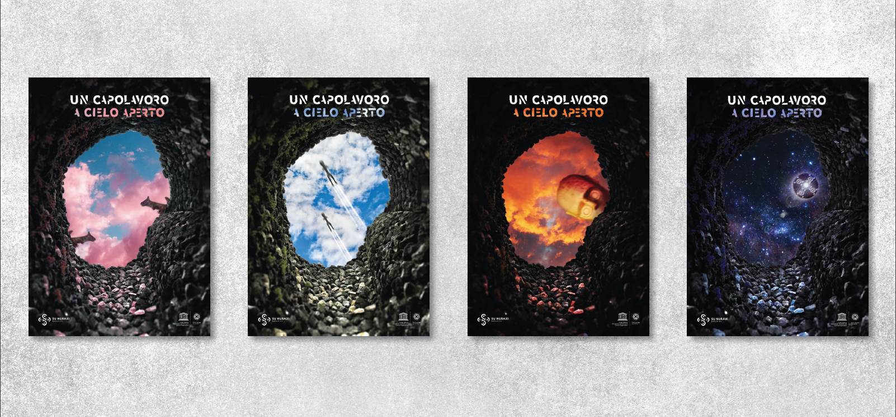
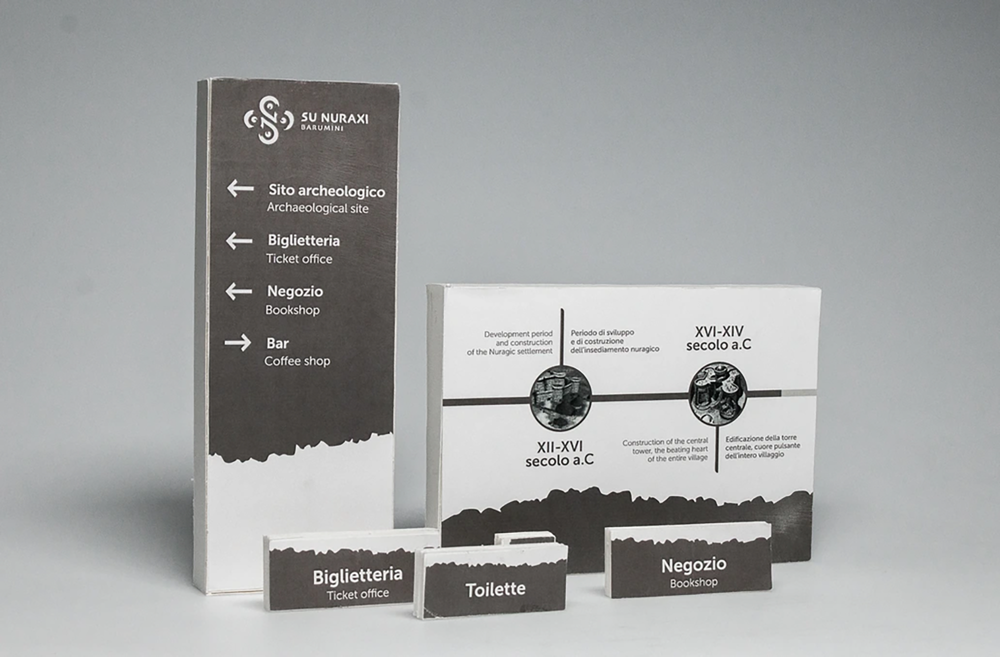

Su Nuraxi
“Su Nuraxi” is a UNESCO site located in
Barumini, Sardinia (Italy), representing the
pinnacle of the Nuragic civilization. The encounter
between man and nature has given
rise to a unique architectural masterpiece,
offering various insights into the society of
the Bronze Age. The destination’s branding
project envisioned the creation of a new
visual identity for the archaeological site,
highlighting the traditions and genius of
such an ancient people.

The design includes numerous artifacts,
conceived based on field research and unified
by a unique and distinctive style. The colors
used reflect the characteristics of the local stone,
and the graphic elements are directly inspired by Nuragic culture.
The institutional artifacts include letterhead, business cards, and entrance
tickets, along with a map for visitors and materials for the staff.
Additionally, a small fabric bag has been designed to contain the materials
given upon entry.
Merchandise for the shop affiliated with the archaeological site has
been created from scratch, along with a shopper bag that draws inspiration
from Nuragic symbolism.
The merchandise includes clothing items, notebooks, notepads, pencils,
stamps, postcards, and an ‘archaeologist kit’ for the younger audience.


To facilitate visitors to the archaeological site, a new signage
system has been designed, accompanied by an advertising campaign
consisting of four posters.
To further enhance the visitor experience, an application has been designed
that provides tourists with ‘nuggets’ of Nuragic culture in the
form of quizzes and interactive challenges. The app also allows users to
visualize ancient architecture through augmented reality and facilitates
the visit booking process.
To increase visibility for the archaeological site on social media channels,
an Instagram page has been created, providing information about
events and tips for visiting. Additionally, two horizontal format videos
have been produced to advertise the updates made to the archaeological
site’s identity.
Info
Role App design, animation, branding
Programs Figma, Adobe Illustrator, After Effects
Course Laboratorio di Progetto della Comunicazione Visiva - C2
Teachers Mario Piazza, Silvia Bleu, Chiara Bersanelli
AY 2021 / 22
Group Sara Faustini, Alessia Garofalo, Marta Gaimmona, Massimo Pietrucci, Fabio Zighetti